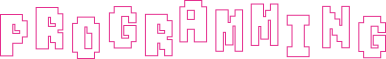

SKILL

できること

デザインツール


Photoshop
制作に合わせた基本的な画像補正や調整が可能です。

Illustrator
バナーやWeb用グラフィックなど、様々な制作ができます。

コーディング言語


HTML
見出しや文章、画像などを使用し、基本的なWebページの構造を組むことができます。

CSS
レイアウト調整やレスポンシブ対応など、見た目を整えることができます。

JavaScript
スライダーやハンバーガーメニューなど、基本的な動きの実装が可能です。

WORKS

つくったもの


ABOUT

わたしについて


Ayane Takahashi
高橋

綾音
1999年生まれ。愛知県出身。
子供のころ憧れていたクリエイティブな仕事に向け
再チャレンジしたいと思い、2025年12月より
オンラインスクールにてWebデザインを学び始めました。
座右の銘をあえて持たない、柔軟な人間でいることが座右の銘。
映画鑑賞や美術館が好きで、作品そのものだけでなく、
作者の想いや登場人物の感情や価値観などの背景について、
考察したり想像しながら楽しむことが好きです。
少し、絵も描きます。
思いついたものをそのまま線にするのがすきで、
気づいたらノートの端やiPadに落書きをしています。
上手さよりも「今の気分」。
ゆるく、ちょっとした遊び心を忍ばせるのがたのしいです。


お友達の｢ザムちゃん｣のお誕生日に送った似顔絵スウェット。
キラキラしたお顔に反する毒舌で独特な思考をもつ彼女にピッタリな
毒々しいカラーがポイントです。


下前歯の歯並びが組体操の扇みたいでかわいいね。と言ったところ、
なんだか嬉しそうでした。そんな川原さんの歯並び再現スウェット。
大変気に入ってくれましたが、ちょっと歯の主張が強いのでパジャマ行きです。